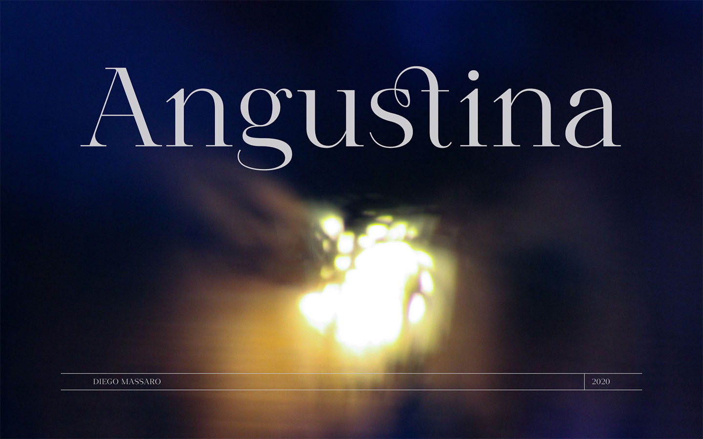
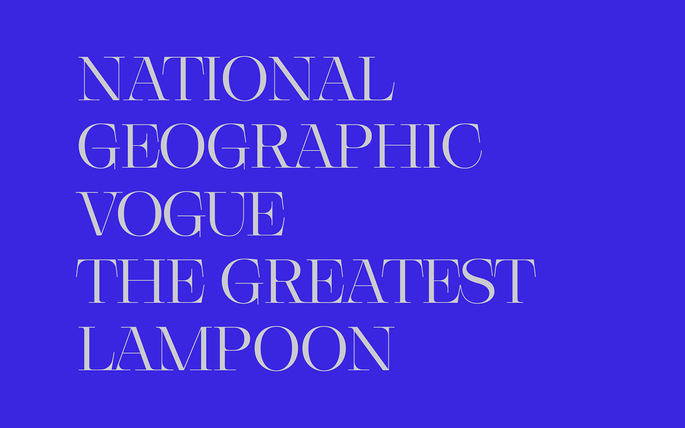

Scientific studies have demonstrated that the use of larger weights like Medium, Semi-Bold or Bold increases legibility in adverse conditions of low contrast. The thesis proposes to augment the typeface’s weight in correspondence with the environment's light intensity, in order to facilitate the acquisition of information on display.
The course required students to design and develop a brand identity. My brand identity is about a hypothetical furniture design company. Mono uses modern design to connect people with their work, their lives, their world. The company creates workplaces and residential furnishings that inspire, evolve, and endure.
Caporetta is a display sans serif typeface conceived during the internship in the studio Superness in Milan and under the best guide of Alessio D’Ellena. The typeface is an improvement of Fukuro, a previous self-designed typeface. Therefore Caporetta takes Fukuro's soul and renews it by showing a more accurate and balanced aspect.
The course's main purpose stands for a re-designing of the book "The Tartar Steppe" by Dino Buzzati. Having carefully read it, we have established the insertion of a series of key concepts: the stressful sense of reclusion between the fort's walls, the anguish of living and changing one's own position, and the cyclic time where every day repeats the previous ones. A frenchfold type of book has been printed, with the text incorporated within the internal pages. Readers are therefore obliged to tear out external pages in order to look into the internal ones. External pages have been designed to contain a flipbook which visually represents previous concepts.
2020 Angustina Self-initiated
Angustina is an elegant display typeface, its style is inspired from classical letters. The typeface has been named after reading the Italian novel “The Tartar Steppe” by Dino Buzzati. In particular I was influenced by the sickly, stoic and mysterious man who stands out for his willingness to stay at Fort Bastiani. Angustina conveys distress and the stinging sensation originated from extreme contrasts between thick and thin strokes and exasperated serifs. The alternation between thin lines and bracketed serifs gives a modern and military appearance.


2019 Fukuro Self-initiated
Fukuro recalls diurnal and nocturnal birds of prey. It instills the cutting shapes, the wings, the movement of these animals and translates them into signs. The typeface experiments with new shapes and contrasts that provide it with a somewhat Japanese style.